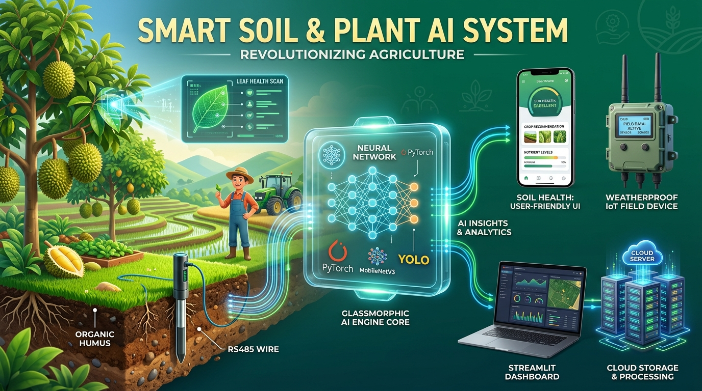

🎨 ภาพแผนผัง 3D Pixar Illustration: แสดงระบบนิเวศน์เกษตรดิจิทัล การสแกนใบพืช โพรบวัดดิน RS485 แกนประมวลผล AI Neural Network และอุปกรณ์นำไปใช้งาน
01
📂
1. ฐานข้อมูลวิจัยภาคสนาม
โครงสร้าง 2 เสาหลัก (ดิน & พืช) พร้อมข้อมูลจริง 2,875 รายการ
- Soil: ภาพดิน 5 ชนิด, OSSL สเปกตรัม 2,152 ช่วงคลื่น
- Plant: โรคทุเรียนจันทบุรี, ข้าว, ผัก, แมลงศัตรูพืช
- Crop Recommendation: 2,200 แปลงตัวอย่าง
2-PILLAR CLEAN DATASET
02
🧠
2. ระบบการเทรนโมเดล
ฝึกสอนโมเดลเฉพาะทางตามลักษณะข้อมูล (Modality)
- MobileNetV3: จำแนกเนื้อดินและอาการขาดธาตุอาหาร
- YOLOv11 Nano: ตรวจจับโรคราและแมลงบนใบพืช
- Random Forest: แนะนำพืชและสูตรปุ๋ยจากเซนเซอร์ NPK
PYTORCH & ULTRALYTICS
03
⚡
3. การแปลงและบีบอัดโมเดล
แปลงโมเดลสู่มาตรฐานเปิดสำหรับรันบนอุปกรณ์ประมวลผลปลายทาง
- ONNX Export: ไม่ขึ้นกับภาษาและแพลตฟอร์ม
- INT8 Quantization: ลดขนาดไฟล์เหลือ < 10 MB
- Zero Latency: รันบนชิปสมาร์ทโฟนโดยไม่ต้องต่อเน็ต
EDGE OPTIMIZATION
04
🚀
4. การนำไปใช้งาน 4 ช่องทาง
ประยุกต์ใช้งานได้ครบทั้งการเรียนการสอนและเกษตรกรตัวจริง
- Web Portal: Streamlit Dual-Tab Dashboard
- REST Microservice: Uvicorn พอร์ต 8000
- Mobile App: Flutter ออฟไลน์ในแปลง
- AIoT Field Kit: Raspberry Pi + เซนเซอร์ RS485
MULTI-PLATFORM READY
🎨 ภาพ 3D Pixar Illustration: แสดงบรรยากาศห้องอบรม 50 คน โดยผู้เรียนแต่ละคนเชื่อมต่อไปยังคลาวด์ Google Colab ดึงโค้ดจาก GitHub ของอาจารย์ แล้วแยกเครื่องเทรนโมเดลด้วย Free GPU อิสระ ไร้การชนกัน 100%